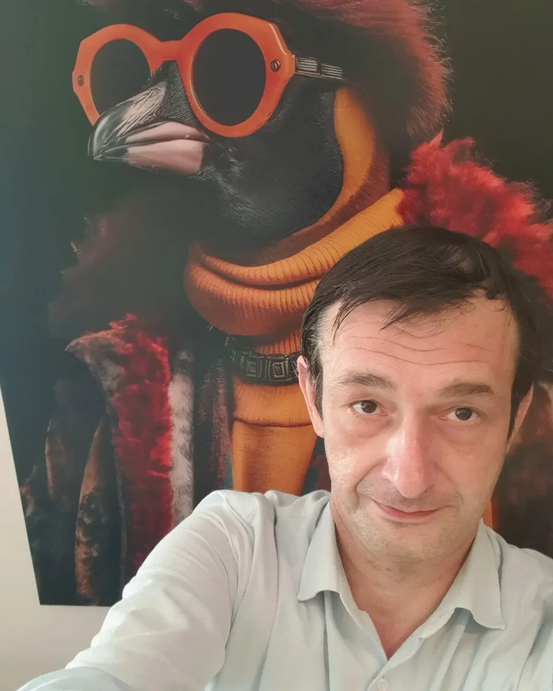

Bewerbung · Texter & Ghostwriter · Frankfurt am Main
Ich bin Texter — aber ich höre nicht beim Text auf.
Beim Turmhotel Frankfurt habe ich nicht nur das Willkommensbuch in 34 Sprachen geschrieben.
Ich habe ein digitales Housekeeping-System konzipiert und gebaut,
das heute im laufenden Betrieb läuft.
Genau diese Kombination bringe ich zu Roman Mayer: Sprache, die verkauft —
und das Verständnis dafür, wie digitale Prozesse dahinter funktionieren.

Ich bin André Schwarz, freier Texter und Ghostwriter aus Frankfurt. Ich schreibe Texte, die etwas bewirken sollen — und wenn nötig, baue ich das Werkzeug gleich mit dazu.
Mein Ansatz: erst das System verstehen, dann die Sprache dafür finden. Beim Turmhotel Frankfurt war das ein Housekeeping-Tool. Im Ortsbeirat waren es politische Anträge unter echtem Zeitdruck. Bei Roman Mayer könnte es das nächste Projekt sein, das wirklich trägt.
Strategiepapier für die Geschäftsführung: veraltetes Hotelsystem ohne Kanalanbindung und Echtzeit-Preissteuerung wird durch ein modernes Cloud-PMS mit automatisiertem Revenue Management abgelöst. Konkretes Rechenbeispiel für Frankfurter Messetage, ein Phasenmodell von Sofortmaßnahmen bis Launch — sowie eine Reihe an Quick Wins ohne Budget. Komplexe Materie in eine klare Entscheidungsvorlage gebracht.
Prozess-Handbuch für ein externes Callcenter, das die Nachtstunden außerhalb der Rezeptionszeiten übernimmt: Late-Check-in-Ablauf, Zahlungsprüfung, FAQ-Skripte und klare Eskalationsgrenzen — geschrieben, damit ein Fremdanbieter am Telefon so persönlich und boutique-typisch klingt wie das Haus selbst.
Mehrsprachiges Willkommensbuch (34 Sprachen) und vollständige Gästekommunikation für ein Frankfurter Stadthotel. Check-in, WLAN, Notfälle, Sehenswürdigkeiten — handwerklich lokalisiert für jede Kultur, nicht maschinell übersetzt.
Browserbasiertes Reinigungs- und Personal-Tool für 77 Zimmer in Haupt- und Nebenhaus: Gästeliste per CSV/Foto-Import, Personal-Zuweisung mit Farbcodes, 3-Klick-Statuswechsel, dreisprachige Oberfläche (DE/EN/HU). Aus Zetteln und mündlichen Absprachen wurde ein Tool, das im echten Schichtbetrieb läuft.
Vollständige Neuschreibung des Wahlprogramms zur Frankfurter Kommunalwahl März 2026. Was übergeben wurde, war eine Copy-paste-Sammlung. Die Version, die heute im Internet steht, ist meine.
Politische Anträge als Ghostwriter für den Ortsbeirat 10, Frankfurt. ~75 % angenommen — einer sogar fraktionsübergreifend von allen Parteien. Präzise Sprache unter echtem institutionellen Druck.
Produkttext für ein datengetriebenes Analyse-System mit Multi-Threading, Kelly-Criterion und Telegram-Integration. Zeigt: Technische Sachverhalte so aufbereiten, dass sie auch ohne Vorkenntnisse überzeugen — das ist Kernkompetenz, nicht Nebenprodukt.
Ich bringe nicht nur Texte mit — ich bringe ein bewiesenes Muster: Ich verstehe Betriebe, erkenne Lücken und schließe sie. Beim Turmhotel war das ein Housekeeping-Tool. Roman Mayer baut seit 2017 eine eigene Trainingsplattform — kein Zufallsprojekt, sondern ein System, das wachsen will. Genau darauf will ich schreiben, nicht daneben.
Das ist der Unterschied zwischen jemandem, der einen Job will — und jemandem, der in ein System reinwachsen möchte.
Schreib mir kurz, worum es geht. Du bekommst eine ehrliche Einschätzung — schnell.